The fact that Milan is at a distance from much of the rest of Italy, that it is peripheral in a geographic sense, does not explain its position of “second city,” a position it has always vainly fought. Indeed, some of the greatest European capitals are peripheral in this sense. Rather, Milan’s role was the consequence of the immense historical importance and the enormous accumulation of myths and symbols that conferred on Milan’s antagonist, Rome, an inevitable prestige. During the Risorgimento, the 19th-century movement for Italian unification, Rome became the heart of a future anticipated in the collective fantasies of the Italian people. Tour the Italy's financial capital Milan and observe its French Gothic and Neoclassical architecture Tour the Italy's financial capital Milan and observe its French Gothic and Neoclassical architectureIntroduction to Milan, with views of the Galleria Vittorio Emanuele II, the Duomo, and La Scala See all videos for this article Yet although Rome remains the political capital of Italy, Milan has long been known as its “moral capital.” When the Milanese assert that their city is the moral capital, they not only express the ancient regionalism typical of all Italy and known as campanilismo (a reference to the church bell of each city), but they also refer to the city’s quality and values, historical as well as contemporary. And if the rest of Italy, Rome included, accepts this statement—or rather accepts the fact that the statement is made—it is because it is more than a simple claim. The claim is justified by contributions in every field—economic, cultural, and ideological—that the city of Milan, in modern times, and particularly since the unification of Italy, has made to the Italian state.
Read more 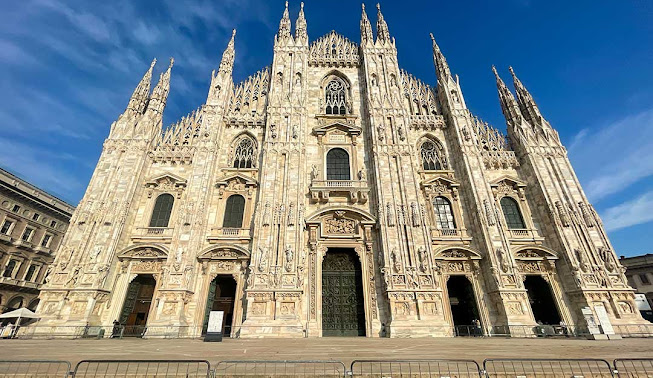 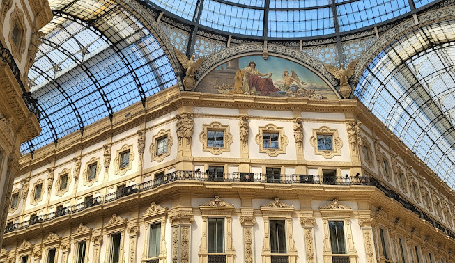 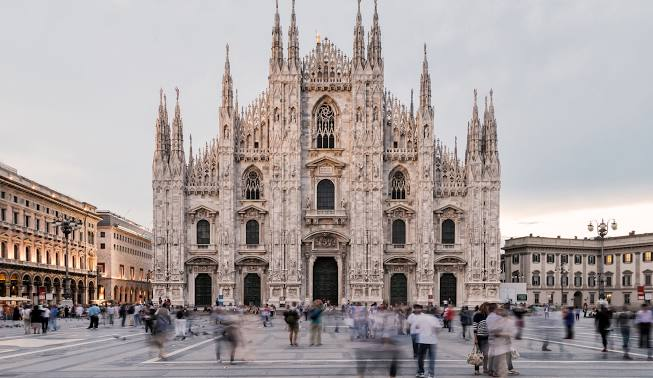 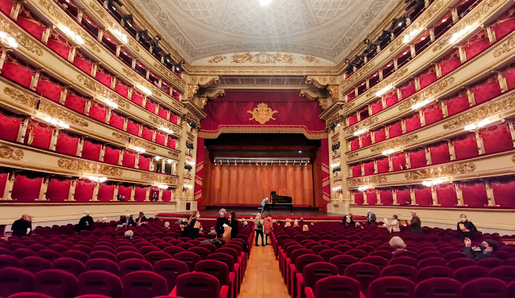The UNESCO World Heritage property comprises the city of Venice and its lagoon situated in the Veneto Region of Northeast Italy. Founded in the 5th century AD and spread over 118 small islands, Venice became a major maritime power in the 10th century. The whole city is an extraordinary architectural masterpiece in which even the smallest building contains works by some of the world's greatest artists such as Giorgione, Titian, Tintoretto, Veronese and others. In this lagoon covering 70,176.4 ha, nature and history have been closely linked since the 5th century when Venetian populations, to escape barbarian raids, found refuge on the sandy islands of Torcello, Jesolo and Malamocco. These temporary settlements gradually became permanent and the initial refuge of the land-dwelling peasants and fishermen became a maritime power. Over the centuries, during the entire period of the expansion of Venice, when it was obliged to defend its trading markets against the commercial undertakings of the Arabs, the Genoese and the Ottoman Turks, Venice never ceased to consolidate its position in the lagoon. In this inland sea that has continuously been under threat, rises amid a tiny archipelago at the very edge of the waves one of the most extraordinary built-up areas of the Middle Ages. From Torcello to the north to Chioggia to the south, almost every small island had its own settlement, town, fishing village and artisan village (Murano). However, at the heart of the lagoon, Venice itself stood as one of the greatest capitals in the medieval world. When a group of tiny islands were consolidated and organized in a unique urban system, nothing remained of the primitive topography but what became canals, such as the Giudecca Canal, St Mark's Canal and the Great Canal, and a network of small rii that are the veritable arteries of a city on water.
Read more 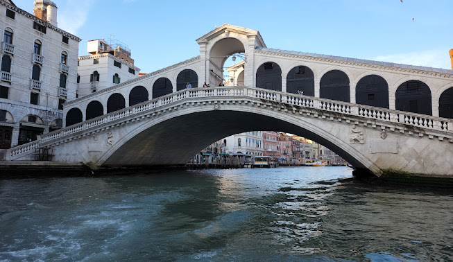 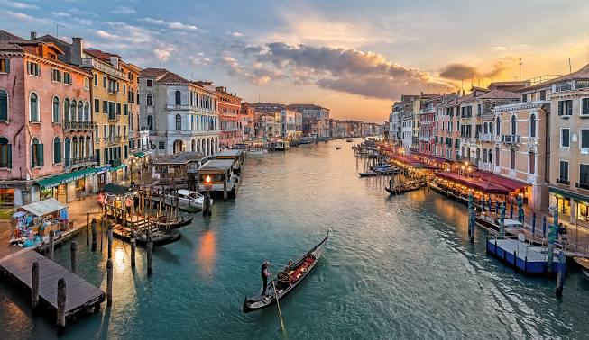 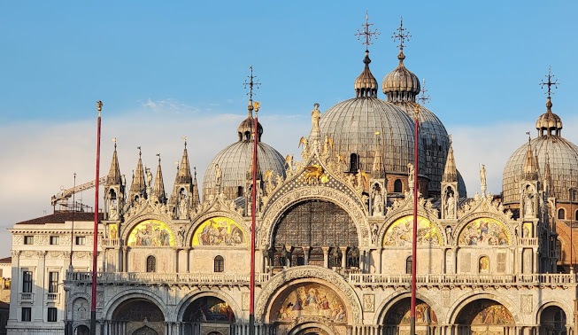 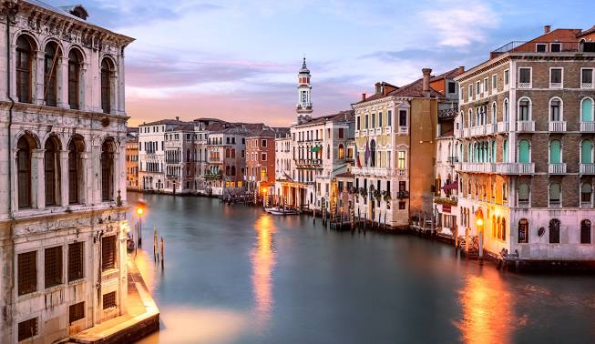Stretching 15 km along the eastern Ligurian coast between Levanto and La Spezia, the jagged, steep coastal landscape has over centuries been intensively developed with stone walled terraces for the growing of vines and olive trees. The area was almost inaccessible, except by sea, until the Genoa-La Spezia railway was built in the 1870s. The property, extending from the Punta Mesco in the west and to the Punta Persico in the east, encompasses the territory of Porto Venere, the three islands of its archipelago (Palmaria, Tino and Tinetto), and the Cinque Terre, the collective name of the five villages of Monterosso, Vernazza, Corniglia, Manarola and Riomaggiore. Some of the cultivation terraces extend to as much as 2 km in length. Terraces extended along the steep slopes from a few meters above sea level to up 400 m a.s.l., the highest altitude suitable for cultivation. They were mostly built in the 12th century, when Saracen raids from the sea had come to an end. The drystone walls are most often carefully constructed of sandstone rough blocks, bonded together with pebbles removed from the ground. The maintenance of the terraces and the cultivation of vines and olive trees on the terraces reflect a communal approach to farming and the collaboration and cooperation of the communities without which such cultivation would not have been possible. The natural garrigue and maquis vegetation survives intact in the higher parts of the steep ridge. The nature of the terrain and the vegetation provides food and shelter for a wide range of insect and animal species. The local communities have adapted themselves to this seemingly rough and inhospitable environment by living in compact settlements on the coast or in small hamlets on the hillsides (e.g. Volastra, Groppo, Drignana, San Bernardino or Campiglia), erected directly on the rock with winding streets. The general use of natural stone for roofing gives these settlements a characteristic appearance. They are generally grouped around religious buildings or medieval castles. The terraces are also dotted by innumerable tiny stone huts isolated or grouped together (e.g. at Fossola, Tramonti, Monestiroli or Schiara) used for temporary shelter during the harvest.
Read more 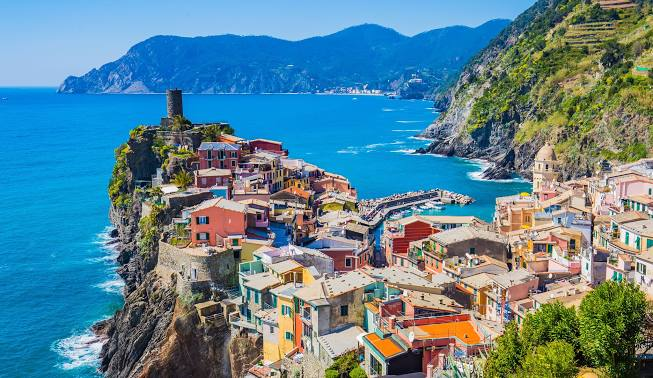 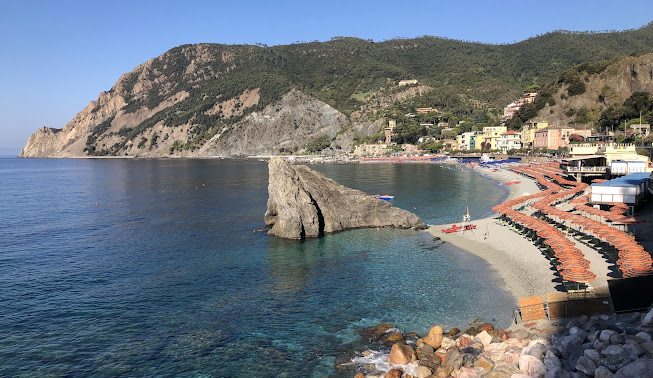 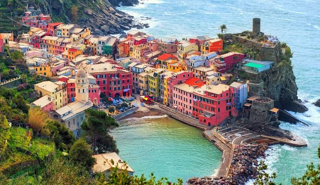